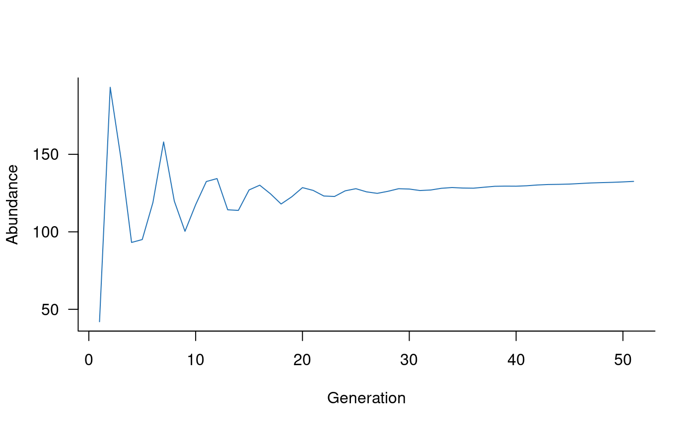

You can install the aae.pop package from GitHub. To
install from GitHub, you’ll need the remotes R package,
which you can install from CRAN with:
install.packages("remotes")You can then install the aae.pop package from Github
with:
remotes::install_github("aae-stats/aae.pop")Once completed, you should be able to load the aae.pop
package with library(aae.pop).
The aae.pop package requires elementary knowledge of
population models. A comprehensive reference is Hal Caswell’s Matrix
Population Models (2nd edition, 2001, Sinauer Associates,
Sunderland). Searching for examples of population viability
analysis, population demographic models, or matrix
population models will bring up many alternative references.
aae.pop is designed for generic matrix models and makes
minimal assumptions about model structure or purpose. However, there are
still some assumptions built into the different functions and
documentation. The most important is the layout of the population matrix
itself. aae.pop assumes that columns move to rows.
For example, a value in the second row and first column of a matrix will
specify a transition from stage 1 (column 1) to stage 2 (row 2), that
is, column 1 moves to row 2. This is a common layout in population
ecology but is not standard in all disciplines.
There are two population structures used frequently in population
ecology: the Leslie matrix (age based) and the Lefkovitch
matrix (life-stage based). A Leslie matrix classifies into age
classes, with transitions restricted to reproduction or survival to the
next age class. A Lefkovitch matrix classifies individuals into life
stages, with transitions restricted to reproduction, survival to the
next life stage, or survival but remaining in the same life stage.
aae.pop includes several helper functions designed
specifically for these two model types. These are described in the Including processes and Beyond defaults vignettes.
aae.pop uses three terms to help specify common model
structures: reproduction, survival, and
transition. These are defined as follows:
reproduction: any transition to the first class (first row), assumed to exclude the first column (i.e., new individuals can’t reproduce).
survival: remaining in the same class.
transition: moving to the next age class or life stage.
With these terms, a Leslie matrix has reproduction and transition elements, whereas a Lefkovitch matrix has reproduction, transition, and survival elements.
Of course, matrix population models can have values anywhere in a
matrix, and aae.pop supports any models represented as a
square matrix. This flexibility is important because some populations
might require complex structures to deal with things like
metapopulations, dormant stages, or size-based models with shrinkage as
well as growth.
The central functions in aae.pop are
dynamics and simulate. The
dynamics function wraps up a population matrix and any
specified processes into a single object. The simulate
function takes this object and generates population projections.
A good place to start is with a basic population matrix and no other processes. For example, a Leslie matrix with five age classes can be specified as:
popmat <- rbind(
c(0, 0, 2, 4, 7), # reproduction from 3-5 year olds
c(0.25, 0, 0, 0, 0), # survival from age 1 to 2
c(0, 0.45, 0, 0, 0), # survival from age 2 to 3
c(0, 0, 0.70, 0, 0), # survival from age 3 to 4
c(0, 0, 0, 0.85, 0) # survival from age 4 to 5
)Using the terminology above, this same matrix could be specified as:
new_offspring <- c(2, 4, 7)
transition_probabilities <- c(0.25, 0.45, 0.70, 0.85)
popmat <- matrix(0, nrow = 5, ncol = 5)
popmat[reproduction(popmat, dims = 3:5)] <- new_offspring
popmat[transition(popmat)] <- transition_probabilitiesAlthough this looks fairly unwieldy in this case, these helper terms can be useful with large matrices.
dynamics object
Once the population matrix is defined, it can be compiled into a
dynamics object with the following code:
popdyn <- dynamics(popmat)It is possible to plot the population dynamics object to visualise
the transitions and structure this implies. This requires the
DiagrammeR package. Visualising population structures can
be a useful way to check the model has been specified correctly, and
these plots are easier to communicate than a giant matrix.
plot(popdyn)With a compiled dynamics object, it’s relatively
straightforward to simulate some population trajectories (with default
settings):
sims <- simulate(popdyn)Simulated trajectories can be plotted using the standard
plot function in R. This example sets the colour to a
medium shade of blue:
plot(sims, col = "#2171B5")
The default settings simulate a single trajectory with 50 time steps,
from random initial conditions (Poisson draws with
).
These settings can be changed directly in the call to
simulate:
initials <- c(100, 50, 20, 10, 5) # some initial conditions
sims <- simulate(popdyn,
nsim = 100,
init = initials,
options = list(ntime = 20))Default settings also specify that population updates are calculated as a cross product and that abundances are not rounded in any way in each step, which allows fractional individuals in the population. These are not ideal settings. Changing them is covered in the Beyond defaults vignette.
Simulated trajectories are arrays with dimensions of replicates
(rows) by classes (columns) by time steps (slices). These arrays are
relatively easy to summarise using apply functions but the
aae.pop package includes several basic summary functions
for convenience.
A simple summary of the probability a population will hit zero
individuals at any time step, plus expected minimum population size
(EMPS), is generated with the summary function. This
summary makes most sense when considering replicate population
trajectories because extinction probabilities are defined as the
proportion of trajectories hitting zero individuals:
## Simulated population has a 0 probability of extinction and expected minimum population size of 50 individuals.
##
## The probability of population declines below non-zero thresholds is:
## n = 0 n = 28 n = 56 n = 84 n = 112 n = 140 n = 168 n = 196 n = 224 n = 252
## 0.000 0.001 0.798 1.000 1.000 1.000 1.000 1.000 1.000 1.000The vector printed at the bottom of this summary is a basic risk curve calculated from ten different extinction thresholds (described below).
The components of this summary are directly accessible:
pr_extinct(sims)## [1] 0
emps(sims)## [1] 50.06562
risk_curve(sims, n = 10)## 0 28 56 84 112 140 168 196 224 252
## 0.000 0.001 0.798 1.000 1.000 1.000 1.000 1.000 1.000 1.000The default settings for pr_extinct, emps,
and risk_curve consider all population classes, all time
steps, and define extinction as zero individuals in the population. Many
applications require more-nuanced definitions. All three functions can
be calculated for a subset of the population (e.g., adults) and for a
reduced time period (e.g., generations 40-50).
pr_extinct(sims, subset = 3:5, times = 40:50)## [1] 0
emps(sims, subset = 3:5, times = 40:50)## [1] 20.28021
risk_curve(sims, subset = 3:5, times = 40:50, n = 10)## 0 4 8 11 15 19 23 26 30 34
## 0.000 0.000 0.000 0.001 0.037 0.322 0.778 0.973 0.999 1.000Extinction can be defined at levels other than zero individuals. For
example, a population might be considered functionally extinct or
destined to become extinct when only 100 adults remain. This
quasi-extinction threshold is controlled with the
threshold parameter to pr_extinct:
pr_extinct(sims, threshold = 100, subset = 3:5, times = 40:50)## [1] 1Risk curves are an extension of the previous idea and consider
probabilities of population declines below multiple thresholds
simultaneously. The summary function calculates a basic
risk curve with ten thresholds spaced evenly between zero and the
maximum observed abundance. More commonly, risk curves focus on multiple
levels and might represent categories such as extreme, high, moderate,
mild, and no risk. These values could be based on many criteria but
often consider genetic factors such as the risk of inbreeding.
risk_curve(sims, threshold = c(0, 10, 50, 100, 1000))## 0 10 50 100 1000
## 0.000 0.000 0.476 1.000 1.000The emps function extracts the minimum population size
within each replicate trajectory and then averages these values over all
trajectories. This averaging defaults to an arithmetic mean but this can
be changed to any function using the fun argument (see
?emps for details). A generalisation of this calculation is
provided with the exps function, where x
represents an unknown function in place of the minimum. With few
exceptions, emps and exps require summary
functions that return single values (scalars). Even with this
restriction, exps allows flexible calculations to calculate
many different summary statistics. For example, it might be informative
to calculate the 95th percentile of each trajectory and then take the
median of this over all trajectories:
exps(sims, fun_within = quantile, fun_among = median, probs = 0.95)## [1] 127.7357The above summary functions are provided for convenient handling of
details such as subsetting the population or time steps. More
complicated functions could be implemented directly with the
apply function and the output simulation
object. An example is the median population size at each time step:
# subset the population to adults
sims <- subset(sims, subset = 3:5)
# drop the first 10 generations (the drop = FALSE
# argument is a safeguard that keeps the third array
# dimension when filtering to a single time step)
sims <- sims[, , 11:51, drop = FALSE]
# sum abundances over all classes, which
# gives a matrix (2D array) with replicates
# in rows and time steps in columns
abundance <- apply(sims, c(1, 3), sum)
# and calculate median over all trajectories, which
# requires keeping the second dimension (time steps)
# while iterating over the first
apply(abundance, 2, median)## [1] 19.27207 17.24090 18.36721 20.54079 19.83921 18.58626 18.49707 19.50724
## [9] 20.05605 19.31365 18.95322 19.32049 19.80666 19.74123 19.36984 19.42135
## [17] 19.71964 19.84010 19.70977 19.61029 19.75668 19.92148 19.92292 19.86478
## [25] 19.89903 20.01619 20.08203 20.07402 20.08156 20.14749 20.22133 20.25135
## [33] 20.26481 20.30572 20.36663 20.41371 20.44123 20.47413 20.52307 20.57264
## [41] 20.61077